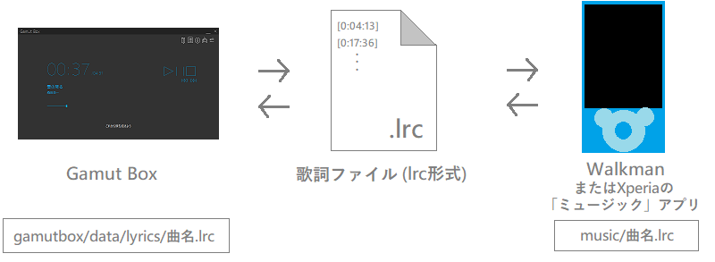
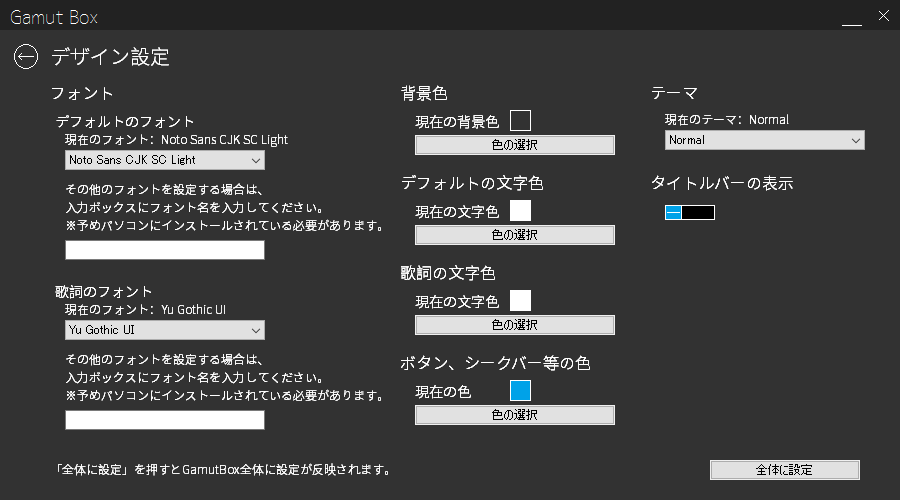

Gamut Boxの特徴
歌詞を表示できる

Gamut Boxには、曲のタイミングに合わせて歌詞を表示する機能が付属しています。
Walkmanの歌詞ファイル（lrc形式）と共用することができます。


Gamut Boxにも歌詞ファイルを作成する機能がありますので、
文字化けしなければWalkmanの歌詞ファイルの作成用に利用することもできます。
自分ごのみにカスタマイズできる

「歌詞設定」にて背景色、文字色、テーマなどを設定することができます。


テーマは「Normal」の他に「Space Travel」「Sea with Swimmer」「Sea with Yacht」「Snow」の4つのテーマを用意しています。
テーマごとに背景の画像やシークバーのボタンが変わります。

「Space Travel」テーマ
曲ごとにタイトル、アーティスト名、アートワークを設定できる


設定した内容は、該当の曲を再生している時に表示されます。
イントロクイズで遊んで、新たな機能を利用できるようになる
_2016-9-14_20-53-40_No-00.png)
イントロクイズは、「ファイル個別設定」で曲名を設定した曲から出題されます。
イントロクイズで点数を貯めると、コマンドを通じて新たな機能を利用できるようになります。

↑コマンド入力画面
ここで受け取ったコマンドを入力すると新たな機能を利用できるようになります。
Gamut Boxはちょっと変わったやたらと多機能な音楽プレイヤーアプリです！
ダウンロードはもちろん無料です。
やたらと多機能でカオスなプレイヤーを使ってみませんか？